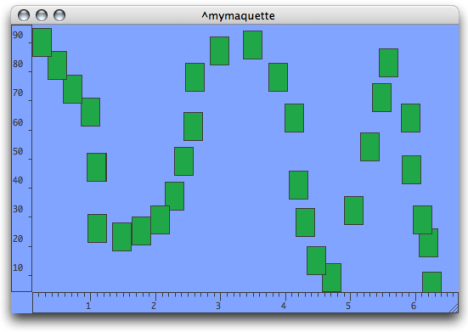

OpenMusic DocumentationHiérarchie de section : OM 6.6 User Manual > Maquettes > Maquettes in Patches > Reference Mode > Examples
OpenMusic DocumentationHiérarchie de section : OM 6.6 User Manual > Maquettes > Maquettes in Patches > Reference Mode > Examples
Navigation : page précédente | page suivante
Attention, votre navigateur ne supporte pas le javascript ou celui-ci à été désactivé. Certaines fonctionnalités de ce guide sont restreintes.
Adding TemporalBoxes : Examples
Adding a List of TemporalBoxes in a Maquette
Program

|
When addbox2maquette is evaluated, both TemporalBoxes are added in the maquette. |
Maquette and Evaluations
The corresponding temporal objects are represented by gray boxes  , which show a small OM icon if the
, which show a small OM icon if the show box icon option is selected in the maquette preferences.
The maquette, after the first evaluation of addbox2maquette.
This maquette already contained three temporal objects. Addbox2maquette has been evaluated twice, without modifying the TemporalBoxes parameters : objects are superimposed. Everytime the function is evaluated, the TemporalBoxes are added in the maquette. No TemporalBox is deleted from the maquette.

After the second evaluation of the function.
Specifying Colour
The colour of a TemporalBox is specified with R-G-B values and the om-make-color function.

Systematizing Colour According to Posy and Offset
Specifying TemporalBoxes Number and Position with a PBF
Program

|
This patch allows to place several TemporalBoxes in a maquette. It has a BPF, an OMLoop box, and the addbox2maquette function.
|
OMLoop

|
The "self" of the BPF is returned to the input of the OMLoop : the x and y-points of each point are enumerated via the slots of a BPF and two listloops.
|
Resulting Maquette
The BPF is expressed by the position of the TemporalBoxes.

Références :
Plan :
Navigation : page précédente | page suivante
A propos...(c) Ircam - Centre Pompidou